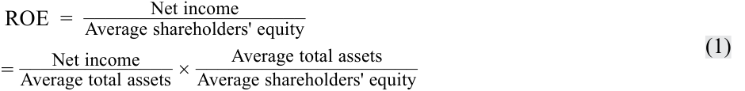
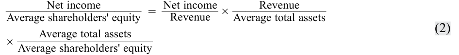
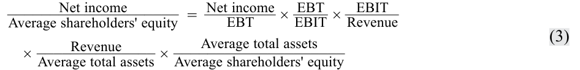
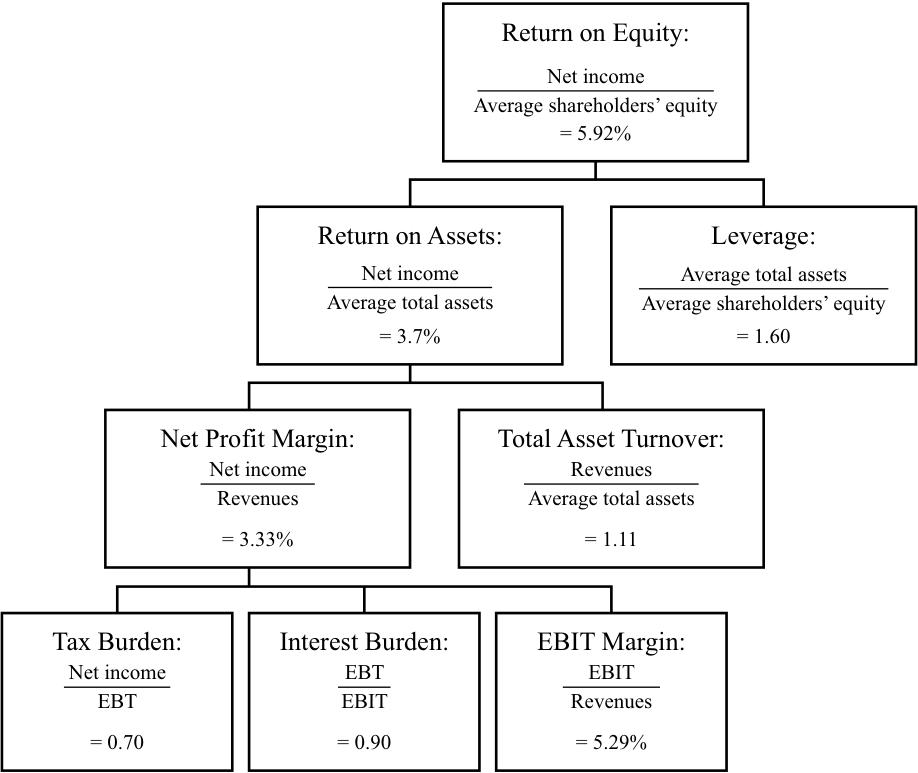

Learning Module 11 Financial Analysis Techniques - Part 4: DuPont Analysis—The Decomposition of ROE
Volume 4: Financial Statement Analysis
Learning Module 11 Financial Analysis Techniques
Part 4/5: DuPont Analysis—The Decomposition of ROE (PDF Pages 438–447)
Tập 4: Phân tích Báo cáo Tài chính (Volume 4: Financial Statement Analysis)
Học phần 11: Các Kỹ thuật Phân tích Tài chính (Learning Module 11: Financial Analysis Techniques)
Phần 4/5: Phân tích DuPont—Phân rã ROE (DuPont Analysis—The Decomposition of ROE) (Trang PDF 438–447)
| Fisca |
l Year |
|||
|---|---|---|---|---|
| Anson Industries | 5 | 4 | 3 | 2 |
| Fiscal | Year | |||
| Clarence Corporation | 5 | 4 | 3 | 2 |
| Inventory turnover | 9.19 | 9.08 | 7.52 | 14.84 |
| DOH | 39.73 | 40.20 | 48.51 | 24.59 |
| Receivables turnover | 8.35 | 7.01 | 6.09 | 5.16 |
| DSO | 43.73 | 52.03 | 59.92 | 70.79 |
| Accounts payable turnover | 6.47 | 6.61 | 7.66 | 6.52 |
| Days payable | 56.44 | 55.22 | 47.64 | 56.00 |
| Cash from operations/Total liabilities | 13.19% | 16.39% | 15.80% | 11.79% |
| ROE | 9.28% | 6.82% | –3.63% | –6.75% |
| ROA | 4.64% | 3.48% | –1.76% | –3.23% |
| Net profit margin (Net income/ Revenue) |
4.38% | 3.48% | –1.60% | –2.34% |
| Total asset turnover (Revenue/ Average assets) |
1.06 | 1.00 | 1.10 | 1.38 |
| Leverage (Average assets/Average equity) |
2.00 | 1.96 | 2.06 | 2.09 |
| Anson Industries | Năm tài chính 5 | Năm tài chính 4 | Năm tài chính 3 | Năm tài chính 2 |
|---|---|---|---|---|
| Clarence Corporation | Năm tài chính 5 | Năm tài chính 4 | Năm tài chính 3 | Năm tài chính 2 |
| Vòng quay hàng tồn kho (Inventory turnover) | 9.19 | 9.08 | 7.52 | 14.84 |
| DOH | 39.73 | 40.20 | 48.51 | 24.59 |
| Vòng quay khoản phải thu (Receivables turnover) | 8.35 | 7.01 | 6.09 | 5.16 |
| DSO | 43.73 | 52.03 | 59.92 | 70.79 |
| Vòng quay khoản phải trả người bán (Accounts payable turnover) | 6.47 | 6.61 | 7.66 | 6.52 |
| Số ngày phải trả (Days payable) | 56.44 | 55.22 | 47.64 | 56.00 |
| Tiền từ hoạt động kinh doanh / Tổng nợ phải trả (Cash from operations/Total liabilities) | 13.19% | 16.39% | 15.80% | 11.79% |
| ROE | 9.28% | 6.82% | –3.63% | –6.75% |
| ROA | 4.64% | 3.48% | –1.76% | –3.23% |
| Biên lợi nhuận ròng (Thu nhập ròng / Doanh thu) (Net profit margin [Net income/Revenue]) | 4.38% | 3.48% | –1.60% | –2.34% |
| Vòng quay tổng tài sản (Doanh thu / Tài sản bình quân) (Total asset turnover [Revenue/Average assets]) | 1.06 | 1.00 | 1.10 | 1.38 |
| Đòn bẩy (Tài sản bình quân / Vốn chủ sở hữu bình quân) (Leverage [Average assets/Average equity]) | 2.00 | 1.96 | 2.06 | 2.09 |
Note: Ratios are expressed in terms of two decimal places and are rounded. Therefore, expected relationships may not hold perfectly.
Lưu ý: Các tỷ số được biểu thị đến hai chữ số thập phân và đã được làm tròn. Do đó, các mối quan hệ kỳ vọng có thể không khớp tuyệt đối hoàn hảo.
- Which of the following choices best describes reasonable conclusions an analyst might make about the companies’ efficiency?
-
A. In FY5, Anson’s DOH of only 4.76 indicated that it was less efficient at inventory management than Clarence, which had DOH of 39.73.
-
B. Over the past four years, Anson has shown greater improvement in efficiency than Clarence, as indicated by its total asset turnover ratio increasing from 0.84 to 1.11.
-
C. In FY5, Clarence’s receivables turnover of 8.35 times indicated that it was more efficient at receivables management than Anson, which had receivables turnover of 10.75.
- Lựa chọn nào sau đây mô tả đúng nhất các kết luận hợp lý mà một chuyên gia phân tích có thể đưa ra về mức độ hiệu quả hoạt động (efficiency) của hai công ty?
-
A. Trong FY5, chỉ số DOH của Anson chỉ ở mức 4.76 cho thấy công ty kém hiệu quả hơn trong quản lý hàng tồn kho so với Clarence, vốn có DOH là 39.73.
-
B. Trong bốn năm qua, Anson đã cho thấy sự cải thiện lớn hơn về hiệu quả hoạt động so với Clarence, thể hiện qua tỷ số vòng quay tổng tài sản tăng từ 0.84 lên 1.11.
-
C. Trong FY5, vòng quay khoản phải thu của Clarence ở mức 8.35 lần cho thấy công ty quản lý khoản phải thu hiệu quả hơn so với Anson, vốn có vòng quay khoản phải thu là 10.75.
Solution:
Lời giải:
B is correct. Over the past four years, Anson has shown greater improvement in efficiency than Clarence, as indicated by its total asset turnover ratio increasing from 0.84 to 1.11. Over the same period of time, Clarence’s total asset turnover ratio has declined from 1.38 to 1.06. Choices A and C are incorrect because DOH and receivables turnover are misinterpreted.
B là đáp án đúng. Trong bốn năm qua, Anson đã cho thấy sự cải thiện lớn hơn về mức độ hiệu quả hoạt động so với Clarence, thể hiện qua tỷ số vòng quay tổng tài sản tăng từ 0.84 lên 1.11. Trong cùng khoảng thời gian đó, tỷ số vòng quay tổng tài sản của Clarence đã giảm từ 1.38 xuống 1.06. Các lựa chọn A và C không đúng bởi vì chỉ số DOH và vòng quay khoản phải thu đã bị diễn giải sai.
14
14
DUPONT ANALYSIS—THE DECOMPOSITION OF ROE
PHÂN TÍCH DUPONT—PHÂN RÃ ROE (DUPONT ANALYSIS—THE DECOMPOSITION OF ROE)
demonstrate the application of DuPont analysis of return on equity and calculate and interpret effects of changes in its components
trình bày việc áp dụng phân tích DuPont đối với tỷ suất sinh lợi trên vốn chủ sở hữu và tính toán cũng như diễn giải tác động của những thay đổi trong các thành phần của nó
As noted earlier, ROE measures the return a company generates on its equity capital. To understand what drives a company’s ROE, a useful technique is to decompose ROE into its component parts. (Decomposition of ROE is sometimes referred to as DuPont analysis because it was developed originally at that company.) Decomposing ROE involves expressing the basic ratio (i.e., net income divided by average shareholders’ equity) as the product of component ratios. Because each of these component ratios is an indicator of a distinct aspect of a company’s performance that affects ROE, the decomposition allows us to evaluate how these different aspects of performance affected the company’s profitability as measured by ROE.
Như đã lưu ý trước đó, ROE đo lường tỷ suất sinh lợi mà một công ty tạo ra trên vốn chủ sở hữu của mình. Để hiểu được những nhân tố nào thúc đẩy ROE của một công ty, một kỹ thuật hữu ích là phân rã ROE thành các bộ phận cấu thành của nó. (Việc phân rã ROE đôi khi được gọi là phân tích DuPont [DuPont analysis] bởi vì nó được phát triển ban đầu tại công ty đó.) Phân rã ROE bao gồm việc biểu thị tỷ số cơ bản (tức là thu nhập ròng chia cho vốn chủ sở hữu bình quân) dưới dạng tích số của các tỷ số thành phần. Bởi vì mỗi tỷ số thành phần này là một chỉ báo cho một khía cạnh riêng biệt trong hiệu quả hoạt động của công ty có tác động đến ROE, việc phân rã cho phép chúng ta đánh giá xem những khía cạnh hiệu quả hoạt động khác nhau này đã ảnh hưởng như thế nào đến khả năng sinh lời của công ty được đo lường bằng ROE.
Decomposing ROE is useful in determining the reasons for changes in ROE over time for a given company and for differences in ROE for different companies in a given time period. The information gained can also be used by management to determine which areas they should focus on to improve ROE. This decomposition will also show why a company’s overall profitability, measured by ROE, is a function of its efficiency, operating profitability, taxes, and use of financial leverage. DuPont analysis shows the relationship between the various categories of ratios discussed in this module and how they all influence the return to the investment of the owners.
Việc phân rã ROE rất hữu ích trong việc xác định nguyên nhân dẫn đến những thay đổi của ROE theo thời gian đối với một công ty nhất định cũng như sự khác biệt về ROE giữa các công ty khác nhau trong một kỳ thời gian nhất định. Thông tin thu được cũng có thể được ban giám đốc sử dụng để xác định những lĩnh vực nào họ nên tập trung vào nhằm cải thiện ROE. Phép phân rã này cũng sẽ cho thấy tại sao khả năng sinh lời tổng thể của một công ty, được đo lường bằng ROE, lại là một hàm số của hiệu quả sử dụng tài sản (efficiency), khả năng sinh lời hoạt động (operating profitability), thuế (taxes), và việc sử dụng đòn bẩy tài chính (financial leverage). Phân tích DuPont chỉ ra mối quan hệ giữa các nhóm tỷ số khác nhau được thảo luận trong học phần này và cách thức mà tất cả chúng cùng ảnh hưởng đến tỷ suất sinh lợi trên khoản đầu tư của các chủ sở hữu.
Analysts have developed several different methods of decomposing ROE. The decomposition presented here is one of the most commonly used and the one found in popular research databases, such as Bloomberg. Return on equity is calculated as follows:
Các chuyên gia phân tích đã phát triển một số phương pháp phân rã ROE khác nhau. Phép phân rã được trình bày ở đây là một trong những phương pháp được sử dụng phổ biến nhất và là phương pháp được tìm thấy trong các cơ sở dữ liệu nghiên cứu thông dụng, chẳng hạn như Bloomberg. Tỷ suất sinh lợi trên vốn chủ sở hữu được tính như sau:
ROE = Net income/Average shareholders’ equity.
The decomposition of ROE makes use of simple algebra and illustrates the relationship between ROE and ROA. Expressing ROE as a product of only two of its components, we can write:
Việc phân rã ROE tận dụng phép biến đổi đại số đơn giản và minh họa mối quan hệ giữa ROE và ROA. Biểu thị ROE dưới dạng tích số của chỉ hai thành phần, chúng ta có thể viết:

which can be interpreted as follows:
có thể được diễn giải như sau:
ROE = ROA × Leverage.
In other words, ROE is a function of a company’s ROA and its use of financial leverage (“leverage” for short, in this discussion). A company can improve its ROE by improving ROA or by increasing leverage. Consistent with the definition given earlier, leverage is measured as average total assets divided by average shareholders’ equity. If a company had no leverage (no liabilities), its leverage ratio would equal 1.0 and ROE would exactly equal ROA. As a company takes on liabilities, its leverage increases. As long as a company is able to borrow at a rate lower than the marginal rate it can earn investing the borrowed money, the company is making an effective use of leverage and ROE would increase as leverage increases. If a company’s borrowing cost exceeds the marginal rate it can earn on investing in the business, ROE would decline as leverage increased because the effect of borrowing would be to depress ROA.
Nói cách khác, ROE là một hàm số của ROA và việc sử dụng đòn bẩy tài chính (financial leverage — gọi tắt là “đòn bẩy” [leverage] trong phần thảo luận này) của một công ty. Một công ty có thể cải thiện ROE của mình bằng cách cải thiện ROA hoặc bằng cách gia tăng đòn bẩy. Nhất quán với định nghĩa đã nêu trước đó, đòn bẩy được đo lường bằng tổng tài sản bình quân chia cho vốn chủ sở hữu bình quân. Nếu một công ty không có đòn bẩy (không có nợ phải trả), tỷ số đòn bẩy của nó sẽ bằng 1.0 và ROE sẽ bằng chính xác ROA. Khi một công ty nhận thêm các khoản nợ phải trả, đòn bẩy của nó sẽ tăng lên. Chừng nào một công ty còn có thể vay nợ với mức lãi suất thấp hơn tỷ suất sinh lợi cận biên (marginal rate) mà công ty có thể kiếm được từ việc đầu tư số tiền đi vay đó, thì công ty đang sử dụng đòn bẩy một cách hiệu quả và ROE sẽ tăng lên khi đòn bẩy tăng. Nếu chi phí đi vay của công ty vượt quá tỷ suất sinh lợi cận biên mà nó có thể kiếm được khi đầu tư vào doanh nghiệp, ROE sẽ sụt giảm khi đòn bẩy tăng lên bởi vì tác động của việc đi vay sẽ làm kéo giảm ROA.
Using the data from Example 14 for Anson Industries, an analyst can examine the trend in ROE and determine whether the increase from an ROE of –0.625 percent in FY2 to 5.925 percent in FY5 is a function of ROA or the use of leverage:
Sử dụng dữ liệu từ Ví dụ 14 của Anson Industries, một chuyên gia phân tích có thể xem xét xu hướng của ROE và xác định xem sự gia tăng từ mức ROE $-0.625\%$ trong FY2 lên $5.925\%$ trong FY5 là một hàm số của ROA hay của việc sử dụng đòn bẩy:
Exhibit 32: Anson Industries
Bảng 32: Anson Industries (Exhibit 32: Anson Industries)
| ROE | = | ROA | × | Leverage | |
|---|---|---|---|---|---|
| FY5 | 5.92% | 3.70% | 1.60 | ||
| FY4 | 1.66% | 1.05% | 1.58 | ||
| FY3 | 1.62% | 1.05% | 1.54 | ||
| FY2 | –0.62% | –0.39% | 1.60 |
| ROE | = | ROA | × | Đòn bẩy (Leverage) | |
|---|---|---|---|---|---|
| FY5 | 5.92% | 3.70% | 1.60 | ||
| FY4 | 1.66% | 1.05% | 1.58 | ||
| FY3 | 1.62% | 1.05% | 1.54 | ||
| FY2 | –0.62% | –0.39% | 1.60 |
Over the four-year period, the company’s leverage factor was relatively stable. The primary reason for the increase in ROE is the increase in profitability measured by ROA.
Trong giai đoạn bốn năm, hệ số đòn bẩy của công ty tương đối ổn định. Nguyên nhân chính dẫn đến sự gia tăng của ROE là sự gia tăng khả năng sinh lời được đo lường bằng ROA.
Just as ROE can be decomposed, the individual components such as ROA can be decomposed. Further decomposing ROA, we can express ROE as a product of three component ratios:
Cũng giống như ROE có thể được phân rã, các thành phần riêng lẻ như ROA cũng có thể được phân rã tiếp. Phân rã sâu hơn ROA, chúng ta có thể biểu thị ROE dưới dạng tích số của ba tỷ số thành phần:

which can be interpreted as follows:
có thể được diễn giải như sau:
ROE = Net profit margin × Total asset turnover × Leverage.
The first term on the right-hand side of this equation is the net profit margin, an indicator of profitability: how much income a company derives per one monetary unit (e.g., euro or US dollar) of sales. The second term on the right is the asset turnover ratio, an indicator of efficiency: how much revenue a company generates per one money unit of assets. Note that ROA is decomposed into these two components: net profit margin and total asset turnover. A company’s ROA is a function of profitability (net profit margin) and efficiency (total asset turnover). The third term on the right-hand side of the equation is a measure of financial leverage, an indicator of solvency: the total amount of a company’s assets relative to its equity capital. This decomposition illustrates that a company’s ROE is a function of its net profit margin, its efficiency, and its leverage. Again, using the data from Example 14 for Anson Industries, the analyst can evaluate in more detail the reasons behind the trend in ROE:
Số hạng đầu tiên ở vế phải của phương trình này là biên lợi nhuận ròng (net profit margin), một chỉ báo về khả năng sinh lời: công ty thu được bao nhiêu thu nhập ròng trên mỗi đơn vị tiền tệ (ví dụ: euro hoặc đô la Mỹ) doanh thu. Số hạng thứ hai ở vế phải là tỷ số vòng quay tài sản (asset turnover ratio), một chỉ báo về hiệu quả hoạt động: công ty tạo ra bao nhiêu doanh thu trên mỗi đơn vị tiền tệ tài sản. Lưu ý rằng ROA được phân rã thành hai thành phần này: biên lợi nhuận ròng và vòng quay tổng tài sản. ROA của một công ty là một hàm số của khả năng sinh lời (biên lợi nhuận ròng) và hiệu quả sử dụng tài sản (vòng quay tổng tài sản). Số hạng thứ ba ở vế phải của phương trình là một thước đo đòn bẩy tài chính, một chỉ báo về khả năng thanh toán dài hạn: tổng quy mô tài sản của công ty tương quan với vốn chủ sở hữu của nó. Phép phân rã này minh họa rằng ROE của một công ty là một hàm số của biên lợi nhuận ròng, hiệu quả sử dụng tài sản, và đòn bẩy tài chính của công ty đó. Một lần nữa, sử dụng dữ liệu từ Ví dụ 14 của Anson Industries, chuyên gia phân tích có thể đánh giá chi tiết hơn những nguyên nhân đằng sau xu hướng của ROE:
Exhibit 33: Anson Industries
Bảng 33: Anson Industries (Exhibit 33: Anson Industries)
| Net profit | Total asset | |||||
|---|---|---|---|---|---|---|
| ROE | = | margin | × | turnover | × Leverage |
|
| FY5 | 5.92% | 3.33% | 1.11 | 1.60 | ||
| FY4 | 1.66% | 1.11% | 0.95 | 1.58 | ||
| FY3 | 1.62% | 1.13% | 0.93 | 1.54 | ||
| FY2 | –0.62% | –0.47% | 0.84 | 1.60 |
| ROE | = | Biên lợi nhuận ròng (Net profit margin) | × | Vòng quay tổng tài sản (Total asset turnover) | × Đòn bẩy (Leverage) | |
|---|---|---|---|---|---|---|
| FY5 | 5.92% | 3.33% | 1.11 | 1.60 | ||
| FY4 | 1.66% | 1.11% | 0.95 | 1.58 | ||
| FY3 | 1.62% | 1.13% | 0.93 | 1.54 | ||
| FY2 | –0.62% | –0.47% | 0.84 | 1.60 |
This further decomposition confirms that increases in profitability (measured here as net profit margin) are indeed an important contributor to the increase in ROE over the four-year period. However, Anson’s asset turnover has also increased steadily. The increase in ROE is, therefore, a function of improving profitability and improving efficiency. As noted earlier, ROE decomposition can also be used to compare the ROEs of peer companies, as demonstrated in Example 15.
Phép phân rã sâu hơn này xác nhận rằng sự gia tăng khả năng sinh lời (được đo lường ở đây bằng biên lợi nhuận ròng) thực sự là một nhân tố đóng góp quan trọng vào sự gia tăng của ROE trong giai đoạn bốn năm. Tuy nhiên, vòng quay tài sản của Anson cũng đã tăng lên đều đặn. Do đó, sự gia tăng của ROE là một hàm số của cả việc cải thiện khả năng sinh lời lẫn việc cải thiện hiệu quả sử dụng tài sản. Như đã lưu ý trước đó, việc phân rã ROE cũng có thể được sử dụng để so sánh ROE của các công ty cùng ngành, như được minh họa trong Ví dụ 15.
EXAMPLE 15
VÍ DỤ 15 (EXAMPLE 15)
A Comparison of Two Companies (2)
So sánh Hai Công ty (2) (A Comparison of Two Companies [2])
- Referring to the data for Anson Industries and Clarence Corporation in Example 14, which of the following choices best describes reasonable conclusions an analyst might make about the companies’ ROE? A. Anson’s inventory turnover of 76.69 indicates it is more profitable than Clarence.
-
B. The main driver of Clarence’s superior ROE in FY5 is its more efficient use of assets.
-
C. The main drivers of Clarence’s superior ROE in FY5 are its greater use of debt financing and higher net profit margin.
-
Solution:
- Tham chiếu dữ liệu của Anson Industries và Clarence Corporation trong Ví dụ 14, lựa chọn nào sau đây mô tả đúng nhất các kết luận hợp lý mà một chuyên gia phân tích có thể đưa ra về ROE của hai công ty?
-
A. Vòng quay hàng tồn kho của Anson ở mức 76.69 cho thấy công ty có khả năng sinh lời cao hơn Clarence.
-
B. Động lực chính tạo nên mức ROE vượt trội của Clarence trong FY5 là việc sử dụng tài sản hiệu quả hơn.
-
C. Các động lực chính tạo nên mức ROE vượt trội của Clarence trong FY5 là việc sử dụng nhiều tài trợ nợ hơn và biên lợi nhuận ròng cao hơn.
-
Lời giải:
C is correct. The main driver of Clarence’s superior ROE (9.28 percent compared with only 5.92 percent for Anson) in FY5 is its greater use of debt financing (leverage of 2.00 compared with Anson’s leverage of 1.60) and higher net profit margin (4.38 percent compared with only 3.33 percent for Anson). A is incorrect because inventory turnover is not a direct indicator of profitability. An increase in inventory turnover may indicate more efficient use of inventory which in turn could affect profitability; however, an increase in inventory turnover would also be observed if a company was selling more goods even if it was not selling those goods at a profit. B is incorrect because Clarence has less efficient use of assets than Anson, indicated by turnover of 1.06 for Clarence compared with Anson’s turnover of 1.11.
C là đáp án đúng. Động lực chính tạo nên mức ROE vượt trội của Clarence (9.28% so với chỉ 5.92% của Anson) trong FY5 là việc sử dụng nhiều tài trợ nợ hơn (đòn bẩy ở mức 2.00 so với đòn bẩy 1.60 của Anson) và biên lợi nhuận ròng cao hơn (4.38% so với chỉ 3.33% của Anson). A không đúng bởi vì vòng quay hàng tồn kho không phải là một chỉ báo trực tiếp về khả năng sinh lời. Sự gia tăng vòng quay hàng tồn kho có thể cho thấy việc sử dụng hàng tồn kho hiệu quả hơn và đến lượt nó có thể ảnh hưởng đến khả năng sinh lời; tuy nhiên, sự gia tăng vòng quay hàng tồn kho cũng sẽ được quan sát thấy nếu một công ty bán được nhiều hàng hóa hơn ngay cả khi công ty không bán số hàng hóa đó có lãi. B không đúng bởi vì Clarence sử dụng tài sản kém hiệu quả hơn so với Anson, thể hiện qua vòng quay 1.06 của Clarence so với vòng quay 1.11 của Anson.
To separate the effects of taxes and interest, we can further decompose the net profit margin and write:
Để tách biệt tác động của thuế và lãi vay, chúng ta có thể phân rã sâu hơn biên lợi nhuận ròng và viết:

which can be interpreted as follows:
có thể được diễn giải như sau:
ROE = Tax burden × Interest burden × EBIT margin × Total asset turnover × Leverage.
This five-way decomposition is the one found in financial databases such as Bloomberg. The first term on the right-hand side of this equation measures the effect of taxes on ROE. Essentially, it reflects one minus the average tax rate, or how much of a company’s pretax profits it gets to keep. This can be expressed in decimal or percentage form. So, a 30 percent tax rate would yield a factor of 0.70 or 70 percent. A higher value for the tax burden implies that the company can keep a higher percentage of its pretax profits, indicating a lower tax rate. A decrease in the tax burden ratio implies the opposite (i.e., a higher tax rate leaving the company with less of its pretax profits).
Phép phân rã năm thành phần (five-way decomposition) này là phép phân rã được tìm thấy trong các cơ sở dữ liệu tài chính như Bloomberg. Số hạng đầu tiên ở vế phải của phương trình này đo lường tác động của thuế lên ROE (Tax burden – Gánh nặng thuế). Về bản chất, nó phản ánh một trừ đi thuế suất bình quân, hay công ty được giữ lại bao nhiêu phần trong lợi nhuận trước thuế của mình. Đại lượng này có thể được biểu thị dưới dạng số thập phân hoặc phần trăm. Vì vậy, mức thuế suất 30% sẽ mang lại hệ số là 0.70 hay 70%. Giá trị cao hơn của hệ số gánh nặng thuế (tax burden) hàm ý rằng công ty có thể giữ lại tỷ lệ phần trăm cao hơn trong lợi nhuận trước thuế của mình, biểu thị mức thuế suất thấp hơn. Sự sụt giảm trong tỷ số gánh nặng thuế hàm ý điều ngược lại (tức là mức thuế suất cao hơn khiến công ty giữ lại được ít lợi nhuận trước thuế hơn).
The second term on the right-hand side captures the effect of interest on ROE. Higher borrowing costs reduce ROE. Some analysts prefer to use operating income instead of EBIT for this term and the following term. Either operating income or EBIT is acceptable as long as it is applied consistently. In such a case, the second term would measure both the effect of interest expense and non-operating income on ROE.
Số hạng thứ hai ở vế phải nắm bắt tác động của lãi vay lên ROE (Interest burden – Gánh nặng lãi vay). Chi phí đi vay cao hơn sẽ làm giảm ROE. Một số chuyên gia phân tích ưa thích sử dụng thu nhập hoạt động (operating income) thay vì EBIT cho số hạng này và số hạng tiếp theo. Cả thu nhập hoạt động lẫn EBIT đều được chấp nhận miễn là được áp dụng một cách nhất quán. Trong trường hợp đó, số hạng thứ hai sẽ đo lường cả tác động của chi phí lãi vay lẫn thu nhập phi hoạt động lên ROE.
The third term on the right-hand side captures the effect of operating margin (if operating income is used in the numerator) or EBIT margin (if EBIT is used) on ROE. In either case, this term primarily measures the effect of operating profitability on ROE.
Số hạng thứ ba ở vế phải nắm bắt tác động của biên lợi nhuận hoạt động (operating margin — nếu thu nhập hoạt động được sử dụng ở tử số) hoặc biên EBIT (EBIT margin — nếu EBIT được sử dụng) lên ROE. Dù trong trường hợp nào, số hạng này chủ yếu đo lường tác động của khả năng sinh lời hoạt động lên ROE.
The fourth term on the right-hand side is again the total asset turnover ratio, an indicator of the overall efficiency of the company (i.e., how much revenue it generates per unit of total assets). The fifth term on the right-hand side is the financial leverage ratio described above—the total amount of a company’s assets relative to its equity capital.
Số hạng thứ tư ở vế phải một lần nữa là tỷ số vòng quay tổng tài sản (total asset turnover ratio), một chỉ báo về mức độ hiệu quả tổng thể của công ty (tức là tạo ra được bao nhiêu doanh thu trên mỗi đơn vị tổng tài sản). Số hạng thứ năm ở vế phải là tỷ số đòn bẩy tài chính đã được mô tả ở trên—tổng quy mô tài sản của công ty tương quan với vốn chủ sở hữu của nó.
This decomposition expresses a company’s ROE as a function of its tax rate, interest burden, operating profitability, efficiency, and leverage. An analyst can use this framework to determine what factors are driving a company’s ROE. The decomposition of ROE can also be useful in forecasting ROE based upon expected efficiency, profitability, financing activities, and tax rates. The relationship of the individual factors, such as ROA to the overall ROE, can also be expressed in the form of an ROE tree to study the contribution of each of the five factors, as shown in Exhibit 34 for Anson Industries.
Phép phân rã này biểu thị ROE của một công ty như một hàm số của thuế suất, gánh nặng lãi vay, khả năng sinh lời hoạt động, hiệu quả sử dụng tài sản, và đòn bẩy tài chính. Một chuyên gia phân tích có thể sử dụng khuôn khổ này để xác định những nhân tố nào đang thúc đẩy ROE của một công ty. Việc phân rã ROE cũng có thể rất hữu ích trong việc dự báo ROE dựa trên mức độ hiệu quả, khả năng sinh lời, hoạt động tài trợ, và thuế suất kỳ vọng. Mối quan hệ của từng nhân tố riêng lẻ, chẳng hạn như ROA đối với ROE tổng thể, cũng có thể được biểu thị dưới dạng một sơ đồ cây ROE (ROE tree) để nghiên cứu mức độ đóng góp của từng nhân tố trong năm nhân tố, như được hiển thị trong Bảng 34 đối với Anson Industries.
Exhibit 34 shows that Anson’s ROE of 5.92 percent in FY5 can be decomposed into ROA of 3.70 percent and leverage of 1.60. ROA can further be decomposed into a net profit margin of 3.33 percent and total asset turnover of 1.11. Net profit margin can be decomposed into a tax burden of 0.70 (an average tax rate of 30 percent), an interest burden of 0.90, and an EBIT margin of 5.29 percent. Overall ROE is decomposed into five components.
Bảng 34 cho thấy ROE của Anson ở mức 5.92% trong FY5 có thể được phân rã thành ROA ở mức 3.70% và đòn bẩy ở mức 1.60. ROA có thể được phân rã tiếp thành biên lợi nhuận ròng ở mức 3.33% và vòng quay tổng tài sản ở mức 1.11. Biên lợi nhuận ròng có thể được phân rã thành gánh nặng thuế ở mức 0.70 (tương ứng thuế suất bình quân là 30%), gánh nặng lãi vay ở mức 0.90, và biên EBIT ở mức 5.29%. Tổng thể ROE được phân rã thành năm thành phần.
Exhibit 34: DuPont Analysis of Anson Industries’ ROE: Fiscal Year 5
Bảng 34: Phân tích DuPont đối với ROE của Anson Industries: Năm Tài chính 5 (Exhibit 34: DuPont Analysis of Anson Industries’ ROE: Fiscal Year 5)

Chú thích hình ảnh: Sơ đồ cây phân rã ROE của Anson Industries (FY5): - Tỷ suất sinh lợi trên vốn chủ sở hữu (Return on Equity): $\frac{\text{Net income}}{\text{Average shareholders' equity}} = 5.92\%$ - Tách thành 2 nhánh: Tỷ suất sinh lợi trên tài sản (Return on Assets): $\frac{\text{Net income}}{\text{Average total assets}} = 3.7\%$ và Đòn bẩy (Leverage): $\frac{\text{Average total assets}}{\text{Average shareholders' equity}} = 1.60$. - Nhánh Return on Assets tách thành: Biên lợi nhuận ròng (Net Profit Margin): $\frac{\text{Net income}}{\text{Revenues}} = 3.33\%$ và Vòng quay tổng tài sản (Total Asset Turnover): $\frac{\text{Revenues}}{\text{Average total assets}} = 1.11$. - Nhánh Net Profit Margin tách thành 3 thành phần: Gánh nặng thuế (Tax Burden): $\frac{\text{Net income}}{\text{EBT}} = 0.70$, Gánh nặng lãi vay (Interest Burden): $\frac{\text{EBT}}{\text{EBIT}} = 0.90$, và Biên EBIT (EBIT Margin): $\frac{\text{EBIT}}{\text{Revenues}} = 5.29\%$.
Example 16 demonstrates how the five-component decomposition can be used to determine reasons behind the trend in a company’s ROE.
Ví dụ 16 minh họa cách thức sử dụng phép phân rã năm thành phần để xác định những nguyên nhân đằng sau xu hướng ROE của một công ty.
EXAMPLE 16
VÍ DỤ 16 (EXAMPLE 16)
Five-Way Decomposition of ROE
Phân rã Năm Thành phần đối với ROE (Five-Way Decomposition of ROE)
An analyst examining Amsterdam PLC (a hypothetical company) wishes to understand the factors driving the trend in ROE over a four-year period. The analyst obtains and calculates the following data from Amsterdam’s annual reports:
Một chuyên gia phân tích đang xem xét Amsterdam PLC (một công ty giả định) muốn tìm hiểu các nhân tố thúc đẩy xu hướng ROE trong giai đoạn bốn năm. Chuyên gia phân tích thu thập và tính toán dữ liệu sau đây từ các báo cáo thường niên của Amsterdam:
Exhibit 35: Amsterdam’s Annual Reports
Bảng 35: Các Báo cáo Thường niên của Amsterdam (Exhibit 35: Amsterdam’s Annual Reports)
| 2017 | 2016 | 2015 | 2014 | |
|---|---|---|---|---|
| ROE | 9.53% | 20.78% | 26.50% | 24.72% |
| Tax burden | 60.50% | 52.10% | 63.12% | 58.96% |
| Interest burden | 97.49% | 97.73% | 97.86% | 97.49% |
| EBIT margin | 7.56% | 11.04% | 13.98% | 13.98% |
| Asset turnover | 0.99 | 1.71 | 1.47 | 1.44 |
| Leverage | 2.15 | 2.17 | 2.10 | 2.14 |
| 2017 | 2016 | 2015 | 2014 | |
|---|---|---|---|---|
| ROE | 9.53% | 20.78% | 26.50% | 24.72% |
| Gánh nặng thuế (Tax burden) | 60.50% | 52.10% | 63.12% | 58.96% |
| Gánh nặng lãi vay (Interest burden) | 97.49% | 97.73% | 97.86% | 97.49% |
| Biên EBIT (EBIT margin) | 7.56% | 11.04% | 13.98% | 13.98% |
| Vòng quay tài sản (Asset turnover) | 0.99 | 1.71 | 1.47 | 1.44 |
| Đòn bẩy (Leverage) | 2.15 | 2.17 | 2.10 | 2.14 |
- What might the analyst conclude?
- Chuyên gia phân tích có thể rút ra kết luận gì?
Solution:
Lời giải:
The tax burden measure has varied, with no obvious trend. In the most recent year, 2017, taxes declined as a percentage of pretax profit. (Because the tax burden reflects the relation of after-tax profits to pretax profits, the increase from 52.10 percent in 2016 to 60.50 percent in 2017 indicates that taxes declined as a percentage of pretax profits.) This decline in average tax rates could be a result of lower tax rates from new legislation or revenue in a lower tax jurisdiction. The interest burden has remained fairly constant over the four-year period indicating that the company maintains a fairly constant capital structure. Operating margin (EBIT margin) declined over the period, indicating the company’s operations were less profitable. This decline is generally consistent with declines in oil prices in 2017 and declines in refining industry gross margins in 2016 and 2017. The company’s efficiency (asset turnover) decreased in 2017. The company’s leverage remained constant, consistent with the constant interest burden. Overall, the trend in ROE (declining substantially over the recent years) resulted from decreases in operating profits and a lower asset turnover. Additional research on the causes of these changes is required to develop expectations about the company’s future performance.
Thước đo gánh nặng thuế đã biến thiên qua các năm mà không có xu hướng rõ rệt. Trong năm gần nhất, 2017, thuế đã giảm xuống khi tính theo tỷ lệ phần trăm của lợi nhuận trước thuế. (Bởi vì gánh nặng thuế phản ánh mối tương quan giữa lợi nhuận sau thuế và lợi nhuận trước thuế, sự gia tăng từ 52.10% vào năm 2016 lên 60.50% vào năm 2017 cho thấy thuế đã giảm xuống tính theo tỷ lệ phần trăm của lợi nhuận trước thuế.) Sự sụt giảm thuế suất bình quân này có thể là kết quả của mức thuế suất thấp hơn từ luật thuế mới hoặc doanh thu phát sinh tại một khu vực pháp lý có mức thuế thấp hơn. Gánh nặng lãi vay duy trì khá ổn định trong suốt giai đoạn bốn năm, cho thấy công ty duy trì một cấu trúc vốn khá ổn định. Biên lợi nhuận hoạt động (biên EBIT) đã sụt giảm trong giai đoạn này, cho thấy hoạt động kinh doanh của công ty kém sinh lời hơn. Sự sụt giảm này nhìn chung nhất quán với sự sụt giảm giá dầu vào năm 2017 và sự sụt giảm biên lợi nhuận gộp của ngành lọc dầu vào năm 2016 và 2017. Mức độ hiệu quả sử dụng tài sản (vòng quay tài sản) của công ty đã giảm vào năm 2017. Đòn bẩy của công ty giữ nguyên không đổi, nhất quán với mức gánh nặng lãi vay ổn định. Nhìn chung, xu hướng của ROE (sụt giảm mạnh trong những năm gần đây) là kết quả của sự sụt giảm lợi nhuận hoạt động và vòng quay tài sản thấp hơn. Cần phải nghiên cứu thêm về nguyên nhân của những thay đổi này để xây dựng kỳ vọng về hiệu quả hoạt động trong tương lai của công ty.
The most detailed decomposition of ROE that we have presented is a five-way decomposition. Nevertheless, an analyst could further decompose individual components of a five-way analysis. For example, EBIT margin (EBIT/Revenue) could be further decomposed into a non-operating component (EBIT/Operating income) and an operating component (Operating income/Revenue). The analyst can also examine which other factors contributed to these five components. For example, an improvement in efficiency (total asset turnover) may have resulted from better management of inventory (DOH) or better collection of receivables (DSO).
Phép phân rã chi tiết nhất của ROE mà chúng ta đã trình bày là phép phân rã năm thành phần. Tuy nhiên, một chuyên gia phân tích vẫn có thể phân rã sâu hơn nữa từng thành phần riêng lẻ của một phân tích năm thành phần. Ví dụ, biên EBIT ($\text{EBIT}/\text{Doanh thu}$) có thể được phân rã tiếp thành một thành phần phi hoạt động ($\text{EBIT}/\text{Thu nhập hoạt động}$) và một thành phần hoạt động ($\text{Thu nhập hoạt động}/\text{Doanh thu}$). Chuyên gia phân tích cũng có thể xem xét những nhân tố nào khác đã đóng góp vào năm thành phần này. Ví dụ, sự cải thiện về mức độ hiệu quả (vòng quay tổng tài sản) có thể bắt nguồn từ việc quản lý hàng tồn kho tốt hơn (DOH) hoặc thu hồi các khoản phải thu tốt hơn (DSO).
15
15
INDUSTRY-SPECIFIC FINANCIAL RATIOS
CÁC TỶ SỐ TÀI CHÍNH ĐẶC THÙ NGÀNH (INDUSTRY-SPECIFIC FINANCIAL RATIOS)
describe the uses of industry-specific ratios used in financial analysis
mô tả công dụng của các tỷ số đặc thù ngành được sử dụng trong phân tích tài chính
As stated earlier, a universally accepted definition and classification of ratios does not exist. The purpose of ratios is to serve as indicators of important aspects of a company’s performance and value. Aspects of performance that are considered important in one industry may be irrelevant in another, and industry-specific ratios reflect these differences. For example, companies in the retail industry may report same-store sales changes because, in the retail industry, it is important to distinguish between growth that results from opening new stores and growth that results from generating more sales at existing stores. Industry-specific metrics can be especially important to the value of equity in early-stage industries, where companies are not yet profitable.
Như đã nêu trước đó, không tồn tại một định nghĩa và cách phân loại tỷ số nào được chấp nhận rộng rãi trên toàn cầu. Mục đích của các tỷ số là đóng vai trò làm chỉ báo cho những khía cạnh quan trọng trong hiệu quả hoạt động và giá trị của một công ty. Những khía cạnh hiệu quả hoạt động được coi là quan trọng trong ngành này có thể lại không liên quan trong một ngành khác, và các tỷ số đặc thù ngành (industry-specific ratios) phản ánh những sự khác biệt này. Ví dụ, các công ty trong ngành bán lẻ có thể báo cáo mức thay đổi doanh số của cùng cửa hàng (same-store sales changes) bởi vì, trong ngành bán lẻ, điều quan trọng là phải phân biệt được giữa sự tăng trưởng đến từ việc mở thêm cửa hàng mới và sự tăng trưởng đến từ việc tạo ra nhiều doanh thu hơn tại các cửa hàng hiện hữu. Các chỉ số đặc thù ngành có thể đặc biệt quan trọng đối với giá trị vốn cổ phần trong những ngành ở giai đoạn đầu (early-stage industries), nơi các công ty vẫn chưa có lãi.
In addition, regulated industries—especially in the financial sector—often are required to comply with specific regulatory ratios. For example, the banking sector’s liquidity and cash reserve ratios provide an indication of banking liquidity and reflect monetary and regulatory requirements. Banking capital adequacy requirements attempt to relate banks’ solvency requirements directly to their specific levels of risk exposure. Exhibit 36 presents, for illustrative purposes only, some industry-specific ratios.
Ngoài ra, các ngành chịu sự quản lý nhà nước chặt chẽ (regulated industries)—đặc biệt là trong lĩnh vực tài chính—thường bắt buộc phải tuân thủ các tỷ số quy định cụ thể. Ví dụ, các tỷ số thanh khoản và dự trữ tiền mặt của ngành ngân hàng cung cấp một chỉ báo về tính thanh khoản ngân hàng cũng như phản ánh các yêu cầu về tiền tệ và quản lý giám sát. Các yêu cầu về mức độ an toàn vốn ngân hàng (capital adequacy requirements) cố gắng liên hệ trực tiếp các yêu cầu về khả năng thanh toán dài hạn của ngân hàng với các mức độ phơi nhiễm rủi ro cụ thể của chúng. Bảng 36 trình bày, chỉ nhằm mục đích minh họa, một số tỷ số đặc thù ngành.
Exhibit 36: Definitions of Some Common Industry-Specific Ratios
Bảng 36: Định nghĩa Một số Tỷ số Đặc thù Ngành Phổ biến (Exhibit 36: Definitions of Some Common Industry-Specific Ratios)
| Ratio | Numerator | Denominator |
|---|---|---|
| Business Risk | ||
| Coefficient of variation of operating income |
Standard deviation of operating income | Average operating income |
| Coefficient of variation of net income | Standard deviation of net income | Average net income |
| Coefficient of variation of revenues | Standard deviation of revenue | Average revenue |
| Financial Sector Ratios | Numerator | Denominator |
| Capital adequacy—banks | Various components of capital | Various measures such as risk-weighted assets, market risk exposure, or level of operational risk assumed |
| Monetary reserve requirement (Cash reserve ratio) |
Reserves held at central bank | Specified deposit liabilities |
| Tỷ số (Ratio) | Tử số (Numerator) | Mẫu số (Denominator) |
|---|---|---|
| Rủi ro Kinh doanh (Business Risk) | ||
| Hệ số biến thiên của thu nhập hoạt động (Coefficient of variation of operating income) | Độ lệch chuẩn của thu nhập hoạt động (Standard deviation of operating income) | Thu nhập hoạt động bình quân (Average operating income) |
| Hệ số biến thiên của thu nhập ròng (Coefficient of variation of net income) | Độ lệch chuẩn của thu nhập ròng (Standard deviation of net income) | Thu nhập ròng bình quân (Average net income) |
| Hệ số biến thiên của doanh thu (Coefficient of variation of revenues) | Độ lệch chuẩn của doanh thu (Standard deviation of revenue) | Doanh thu bình quân (Average revenue) |
| Các Tỷ số Khu vực Tài chính (Financial Sector Ratios) | Tử số (Numerator) | Mẫu số (Denominator) |
| An toàn vốn—ngân hàng (Capital adequacy—banks) | Các thành phần khác nhau của vốn (Various components of capital) | Các thước đo khác nhau như tài sản có rủi ro (risk-weighted assets), mức phơi nhiễm rủi ro thị trường (market risk exposure), hoặc mức độ rủi ro hoạt động gánh chịu (level of operational risk assumed) |
| Yêu cầu dự trữ tiền tệ (Tỷ lệ dự trữ bắt buộc bằng tiền mặt) (Monetary reserve requirement [Cash reserve ratio]) | Dự trữ nắm giữ tại ngân hàng trung ương (Reserves held at central bank) | Các khoản nợ tiền gửi được quy định (Specified deposit liabilities) |
| Financial Sector Ratios | Numerator | Denominator |
|---|---|---|
| Liquid asset requirement | Approved “readily marketable” securities | Specified deposit liabilities |
| Net interest margin | Net interest income | i Total interest-earning assets |
| Retail Ratios | Numerator | Denominator |
| Same (or comparable) store sales | Average revenue growth year over year for stores open in both periods |
Not applicable |
| Sales per square meter (or square foot) | Revenue | Total retail space in square meters (or square feet) |
| Service Companies | Numerator | Denominator |
| Revenue per employee | Revenue | Total number of employees |
| Net income per employee | Net income | Total number of employees |
| Hotel | Numerator | Denominator |
| Average daily rate | Room revenue | Number of rooms sold |
| Occupancy rate | Number of rooms sold | Number of rooms available |
| Subscription or Relationship-Based | ||
| Businesses | Numerator | Denominator |
| Average revenue per user (ARPU) | Revenue | Average number of subscribers or users |
| Các Tỷ số Khu vực Tài chính (Financial Sector Ratios) | Tử số (Numerator) | Mẫu số (Denominator) |
|---|---|---|
| Yêu cầu tài sản thanh khoản (Liquid asset requirement) | Các chứng khoán “khả mại sẵn sàng giao dịch” được phê duyệt (Approved “readily marketable” securities) | Các khoản nợ tiền gửi được quy định (Specified deposit liabilities) |
| Biên lãi ròng (Net interest margin – NIM) | Thu nhập lãi thuần (Net interest income) | Tổng tài sản sinh lãi (Total interest-earning assets) |
| Các Tỷ số Bán lẻ (Retail Ratios) | Tử số (Numerator) | Mẫu số (Denominator) |
| Doanh số cùng cửa hàng (hoặc cửa hàng tương đương) (Same [or comparable] store sales) | Tốc độ tăng trưởng doanh thu bình quân qua từng năm của các cửa hàng mở cửa trong cả hai kỳ (Average revenue growth year over year for stores open in both periods) | Không áp dụng (Not applicable) |
| Doanh thu trên mỗi mét vuông (hoặc foot vuông) (Sales per square meter [or square foot]) | Doanh thu (Revenue) | Tổng diện tích bán lẻ tính bằng mét vuông (hoặc foot vuông) (Total retail space in square meters [or square feet]) |
| Các Công ty Dịch vụ (Service Companies) | Tử số (Numerator) | Mẫu số (Denominator) |
| Doanh thu trên mỗi nhân viên (Revenue per employee) | Doanh thu (Revenue) | Tổng số lượng nhân viên (Total number of employees) |
| Thu nhập ròng trên mỗi nhân viên (Net income per employee) | Thu nhập ròng (Net income) | Tổng số lượng nhân viên (Total number of employees) |
| Khách sạn (Hotel) | Tử số (Numerator) | Mẫu số (Denominator) |
| Giá phòng bình quân hàng ngày (Average daily rate – ADR) | Doanh thu phòng (Room revenue) | Số lượng phòng đã bán (Number of rooms sold) |
| Tỷ lệ lấp đầy phòng (Occupancy rate) | Số lượng phòng đã bán (Number of rooms sold) | Số lượng phòng sẵn có (Number of rooms available) |
| Các Doanh nghiệp Dựa trên Thuê bao hoặc Mối quan hệ (Subscription or Relationship-Based Businesses) | Tử số (Numerator) | Mẫu số (Denominator) |
| Doanh thu bình quân trên mỗi người dùng (Average revenue per user – ARPU) | Doanh thu (Revenue) | Số lượng thuê bao hoặc người dùng bình quân (Average number of subscribers or users) |
Note: Many other industry-specific ratios are outside the scope of this module. Resources such as Standard and Poor’s Industry Surveys present useful ratios for each industry. Industry organizations may present useful ratios for the industry or a task specific to the industry.
Lưu ý: Nhiều tỷ số đặc thù ngành khác nằm ngoài phạm vi của học phần này. Các nguồn tài liệu như Standard and Poor’s Industry Surveys trình bày các tỷ số hữu ích cho từng ngành. Các hiệp hội ngành nghề cũng có thể trình bày các tỷ số hữu ích cho ngành hoặc cho một nhiệm vụ cụ thể trong ngành đó.
MODEL BUILDING AND FORECASTING 16
XÂY DỰNG MÔ HÌNH VÀ DỰ BÁO (MODEL BUILDING AND FORECASTING) 16
describe how ratio analysis and other techniques can be used to model and forecast earnings
mô tả cách thức phân tích tỷ số và các kỹ thuật khác có thể được sử dụng để lập mô hình và dự báo lợi nhuận
Analysts often need to forecast future financial performance. For example, analysts’ EPS forecasts and related equity valuations are widely followed by Wall Street. Analysts use data about the economy, industry, and company in arriving at a company’s forecast. The results of an analyst’s financial analysis, including common-size and ratio analyses, are integral to this process, along with the judgment of the analysts.
Các chuyên gia phân tích thường cần dự báo hiệu quả tài chính trong tương lai. Ví dụ, các dự báo EPS của chuyên gia phân tích và các định giá cổ phiếu liên quan được Phố Wall theo dõi rộng rãi. Các chuyên gia phân tích sử dụng dữ liệu về nền kinh tế, ngành, và công ty để đi đến bản dự báo cho một công ty. Kết quả phân tích tài chính của chuyên gia phân tích, bao gồm phân tích theo quy mô chung và phân tích tỷ số, là một phần không thể tách rời của quy trình này, cùng với sự xét đoán chuyên môn của các chuyên gia phân tích.
Based upon forecasts of growth and expected relationships among the financial statement data, the analyst can build a model to forecast future performance, which will be covered in later modules. In addition to budgets, pro forma financial statements are widely used in financial forecasting within companies, especially for use by senior executives and boards of directors. Last but not least, these budgets and forecasts are also used in presentations to credit analysts and others in obtaining external financing.
Dựa trên các dự báo về tăng trưởng và các mối quan hệ kỳ vọng giữa các dữ liệu báo cáo tài chính, chuyên gia phân tích có thể xây dựng một mô hình để dự báo hiệu quả hoạt động trong tương lai, nội dung này sẽ được trình bày ở các học phần sau. Bên cạnh các bản dự toán ngân sách (budgets), các báo cáo tài chính phóng chiếu (pro forma financial statements) được sử dụng rộng rãi trong công tác dự báo tài chính tại các công ty, đặc biệt là để phục vụ các giám đốc điều hành cấp cao và hội đồng quản trị. Cuối cùng nhưng không kém phần quan trọng, những bản ngân sách và dự báo này cũng được sử dụng trong các buổi thuyết trình trước các chuyên gia phân tích tín dụng và các bên khác nhằm huy động nguồn tài trợ bên ngoài.
For example, based on a revenue forecast, an analyst may budget expenses based on expected common-size data. Forecasts of balance sheet and cash flow statements can be derived from expected ratio data, such as DSO. Forecasts are not limited to a single point estimate but should involve a range of possibilities. This can involve several techniques:
Ví dụ, dựa trên một dự báo doanh thu, chuyên gia phân tích có thể lập ngân sách chi phí dựa trên dữ liệu theo quy mô chung kỳ vọng. Các dự báo về bảng cân đối kế toán và báo cáo lưu chuyển tiền tệ có thể được suy ra từ dữ liệu tỷ số kỳ vọng, chẳng hạn như DSO. Các dự báo không chỉ giới hạn ở một ước lượng điểm duy nhất mà nên bao gồm một dải các khả năng có thể xảy ra. Điều này có thể bao gồm một số kỹ thuật sau:
-
Sensitivity analysis : Also known as “what if” analysis, sensitivity analysis shows the range of possible outcomes as specific assumptions are changed; this could, in turn, influence financing needs or investment in fixed assets.
-
Scenario analysis : This type of analysis shows the changes in key financial quantities that result from given (economic) events, such as the loss of customers, the loss of a supply source, or a catastrophic event. If the list of events is mutually exclusive and exhaustive and the events can be assigned probabilities, the analyst can evaluate not only the range of outcomes but also standard statistical measures such as the mean and median value for various quantities of interest.
-
Simulation : This is computer-generated sensitivity or scenario analysis based on probability models for the factors that drive outcomes. Each event or possible outcome is assigned a probability. Multiple scenarios are then run using the probability factors assigned to the possible values of a variable to determine an expected outcome for that variable.
-
Phân tích độ nhạy (Sensitivity analysis): Còn được gọi là phân tích “điều gì sẽ xảy ra nếu” (“what if” analysis), phân tích độ nhạy cho thấy phạm vi các kết quả có thể xảy ra khi các giả định cụ thể bị thay đổi; điều này đến lượt nó có thể ảnh hưởng đến nhu cầu tài trợ hoặc việc đầu tư vào tài sản cố định.
-
Phân tích kịch bản (Scenario analysis): Loại phân tích này cho thấy những thay đổi trong các đại lượng tài chính then chốt bắt nguồn từ những sự kiện (kinh tế) nhất định, chẳng hạn như việc mất khách hàng, mất nguồn cung ứng, hoặc một sự kiện thảm họa. Nếu danh sách các sự kiện là xung khắc nhau (mutually exclusive) và vét cạn (exhaustive) đồng thời các sự kiện có thể được gán xác suất, chuyên gia phân tích có thể đánh giá không chỉ phạm vi của các kết quả đầu ra mà còn cả các thước đo thống kê tiêu chuẩn như giá trị trung bình (mean) và trung vị (median) cho nhiều đại lượng đang quan tâm.
-
Mô phỏng (Simulation): Đây là phân tích độ nhạy hoặc phân tích kịch bản được tạo ra bằng máy tính dựa trên các mô hình xác suất cho những nhân tố thúc đẩy kết quả đầu ra. Mỗi sự kiện hoặc kết quả có thể xảy ra được gán một xác suất. Nhiều kịch bản sau đó sẽ được chạy bằng cách sử dụng các nhân tố xác suất đã gán cho các giá trị khả dĩ của một biến số nhằm xác định một kết quả kỳ vọng cho biến số đó.
~~REFERENCES~~
TÀI LIỆU THAM KHẢO (REFERENCES)
Abarbanell, J. S. and B. J. Bushee. 1998. “Abnormal Returns to a Fundamental Analysis Strategy.” Accounting Review 73 (1): 19–45.
Abarbanell, J. S. and B. J. Bushee. 1998. “Abnormal Returns to a Fundamental Analysis Strategy.” Accounting Review 73 (1): 19–45.
-
Altman, E. 1968. “Financial Ratios, Discriminant Analysis and the Prediction of Corporate Bankruptcy.” Journal of Finance 23 (4): 589–609. doi:10.2307/2978933
-
Hopwood, William, James C. McKeown, and Jane F. Mutchler. 1994. “A Reexamination of Auditor versus Model Accuracy within the Context of the Going-Concern Opinion Decision.” Contemporary Accounting Research 10 (2): 409–31.
-
Ohlson, James A. 1980. “Financial Ratios and the Probabilistic Prediction of Bankruptcy.” Journal of Accounting Research 18 (1): 109–31.
-
Ou, J. A. and S. H. Penman. 1989. “Financial Statement Analysis and the Prediction of Stock Returns.” Journal of Accounting and Economics 11 (4): 295–329. doi:10.1016/0165-4101(89)90017-7
-
Robinson, T. and P. Munter. 2004. “Financial Reporting Quality: Red Flags and Accounting Warning Signs.” Commercial Lending Review 19 (1): 2–15.
-
Altman, E. 1968. “Financial Ratios, Discriminant Analysis and the Prediction of Corporate Bankruptcy.” Journal of Finance 23 (4): 589–609. doi:10.2307/2978933
-
Hopwood, William, James C. McKeown, and Jane F. Mutchler. 1994. “A Reexamination of Auditor versus Model Accuracy within the Context of the Going-Concern Opinion Decision.” Contemporary Accounting Research 10 (2): 409–31.
-
Ohlson, James A. 1980. “Financial Ratios and the Probabilistic Prediction of Bankruptcy.” Journal of Accounting Research 18 (1): 109–31.
-
Ou, J. A. and S. H. Penman. 1989. “Financial Statement Analysis and the Prediction of Stock Returns.” Journal of Accounting and Economics 11 (4): 295–329. doi:10.1016/0165-4101(89)90017-7
-
Robinson, T. and P. Munter. 2004. “Financial Reporting Quality: Red Flags and Accounting Warning Signs.” Commercial Lending Review 19 (1): 2–15.